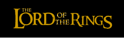

The Lord of the Rings é uma trilogia de filmes épicos de alta fantasia e aventura dirigida por Peter Jackson. Os filmes são baseados no romance The Lord of the Rings de J. R. R. Tolkien e têm os mesmos títulos dos três volumes do romance: The Fellowship of the Ring (2001), The Two Towers (2002) e The Return of the King (2003). Produzida e distribuída pela New Line Cinema com a coprodução da WingNut Films de Jackson, a série conta com um elenco coral.
Ambientados no mundo fictício de Terra-média, os filmes acompanham o hobbit Frodo Baggins enquanto ele e a Sociedade do Anel embarcam em uma missão para destruir o Um Anel e derrotar seu criador, o Senhor das Trevas Sauron. A Sociedade acaba se separando e Frodo continua a missão com seu fiel companheiro Sam e, eventualmente, o traiçoeiro Gollum. Enquanto isso, Aragorn, herdeiro exilado do trono de Gondor, junto com o elfo Legolas, o anão Gimli, Merry, Pippin, Boromir e o mago Gandalf, unem-se para salvar os Povos Livres da Terra-média das forças de Sauron e reuni-los na Guerra do Anel para ajudar Frodo distraindo a atenção de Sauron.
Na Segunda Era, senhores dos elfo, anão e Homens recebem cada um Anéis de Poder. Sauron forja secretamente o Um Anel, dando-lhe poder sobre os outros Anéis. Homens e Elfos batalham contra Sauron. Isildur corta o Anel do dedo de Sauron, encerrando a Segunda Era. O Anel corrompe Isildur, que é morto por Orcs. O Anel fica perdido por 2.500 anos até Gollum encontrá-lo. Séculos depois, o Anel é encontrado pelo hobbit Bilbo Baggins.
Sessenta anos depois, Bilbo passa o Anel para Frodo. O mago Gandalf descobre que se trata do Um Anel e avisa Frodo para partir. Frodo sai com Sam, sendo perseguido pelos nove servos Nazgûl de Sauron. Eles encontram Merry e Pippin e escapam dos Nazgûl, chegando a Bree, mas Gandalf não está lá, tendo sido capturado pelo mago maligno Saruman. Um Ranger chamado Strider os guia até Rivendell, mas são emboscados no Weathertop pelos Nazgûl. O líder deles apunhala Frodo com uma lâmina de Morgul. Arwen, a amada elfa de Strider, resgata Frodo. Gandalf escapa da torre de Saruman. O pai de Arwen, Elrond, realiza um conselho. Decide-se que o Anel deve ser destruído nas chamas do Monte da Perdição. Frodo se voluntaria para levar o Anel, acompanhado por oito outros. Bilbo dá a Frodo sua espada Sting e uma cota de malha de mithril.
Frodo e Sam se perdem nas colinas próximas a Mordor, sendo rastreados por Gollum. Capturando Gollum, Frodo o convence a guiá-los.
Aragorn, Legolas e Gimli entram no reino de Rohan. Os Orcs são mortos pelos cavaleiros de Éomer de Rohan; Merry e Pippin escapam para a Floresta de Fangorn. Éomer dá cavalos a Aragorn. Em Fangorn, o grupo de Aragorn encontra um Gandalf ressuscitado. Gandalf os leva à capital de Rohan, Edoras; Gandalf liberta Théoden do controle de Saruman. Théoden viaja para Helm's Deep para se defender do exército de Saruman. Em Fangorn, Merry e Pippin encontram o Ent Treebeard. Ele os leva em direção a Isengard, onde veem como Saruman destruiu a floresta. Enfurecidos, os Ents invadem Isengard, aprisionando Saruman em sua torre.
| Filme | Rotten Tomatoes | Metacritic | CinemaScore |
|---|---|---|---|
| Filmes TOP | |||
| The Two Towers | 95% (média 8,50/10) (260 críticas) | 87/100 (39 críticas) | A |
| The Return of the King | 94% (média 8,70/10) (282 críticas) | 94/100 (41 críticas) | A+ |
| The Fellowship of the Ring | 92% (média 8,20/10) (237 críticas) | 92/100 (34 críticas) | A- |